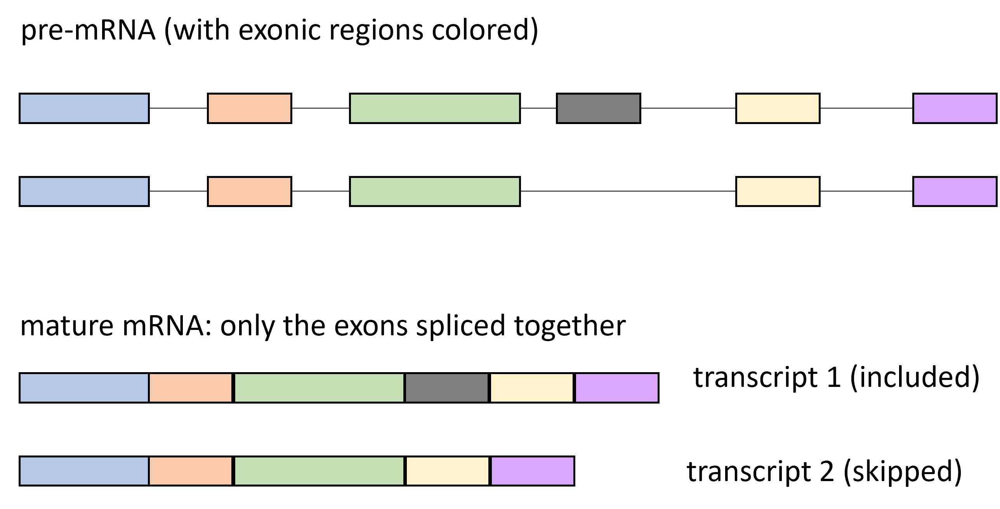
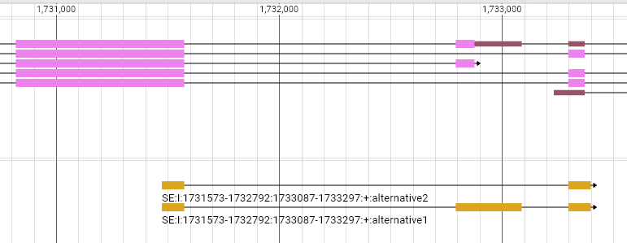

Model
Biology
To summarize the biology, alternative splicing can take various forms, which cannot be described in a unified way, and may involve different mechanisms. Here we will focus on the exon skipping: there is a gene, which has introns and exons, most of them constitutive (do not vary). In that gene, there is one particular exon that is alternative.

So instead of the previous approach of looking at all kind of alternative splicing of all forms, this time I started by looking for this exact configuration of exons within the genome. I got 1,109 such events (mostly in different genes, but there are a few cases with multiple events in the same gene).
Code that I finished writing but that is still running, is about quantifying the relative amount of transcript 1 and transcript 2 in each sample (193 of them, subject to QC). So for each event and each sample, I will give you a PSI value between 0 and 1 or NA.
If the gene is not expressed in that neuron type, the PSI is NA. If the PSI is 1, that means, in this sample, the gene is always in the form of transcript 1 (i.e. exon always included). If PSI = 0, that gene is always in the form of transcript 2 (always skipped). And then you can have all kind of values between 0 and 1, indicating a mixture of transcript 1 and transcript 2.
Sample definition and output
We consider \(T\) neuron types, the neuron type \(t\) of them has \(S_t\) samples.
We consider “exon skipping” events, there are \(E\) such events.
For each sample \(s \in [1,S_t] \space / \space t \in [1,T]\), we can compute the relative amount of skipped transcript \(PSI_{e,s}\), and this is what we want to predict (i.e. regression task).
What’s more, an interesting trick used by the authors of Tsplice, to encourage the model to focus on difference between samples, is to compute the average \(\overline{PSI}_e\) for all samples, then for each sample compute the \((\Delta PSI)_{e,s}\), focusing on how this sample differs from the others.
One more note, for example in that TSplice paper, they used a similar approach, but averaged all the samples in a given tissue type. So they compute \(PSI_{e,t}\). I expect we are better off not following them, as the samples from a same neuron types are independent biological replicates, so keeping them separate allows us to capture meaningful biological variation.
One thing that I still dislike is that in many cases, the exon skipping event is overlapping with other events. For example in this gene tln-1:

Reads will be counted as inclusion reads even if the only transcript present is the one with the terminal exon. However, short of a full transcript quantification, there
Note: number of cases in the dataset
In that setting, we currently have \(S=193\) samples, after quality control we might decrease it to \(190\). We also have \(E=1,109\) events, which might decrease to \(1,000\) after QC (as there are a few genes with many events on top of each other, this might not be an appropriate case).
So that would leave us with \(190 * 1,000 = 190,000\) cases, which we can split into training and testing (stratifying to ensure that the training set has at least one example from each neuron type).
Features
As described above, the output that we want to predict is a \(\Delta PSI_{e,s}\),, this is based on two sets of features.
Genomic sequence
As with the previous iteration of the model, we have the sequence of the gene, \(G_e\). Contrary to the previous model, we are focusing on one part of the sequence, the one with the event, so maybe it makes sense to use a set of 5 features:
- sequence of the exon
- sequence of the upstream intron
- sequence of the downstream intron
- sequence of the entire gene up to the upstream intron
- sequence of the entire gene starting from the downstream intron
This way the first 3 features would allow the model to focus on local aspects, the last 2 would enable taking the long-range interactions into consideration. It might even be a good idea in the future to use a different encoding for these sets of features.
The last 2 might be better as a single sequence of the whole gene, but I don’t see how to include information about the position of the event within the gene.
As a literature note, TSplice uses an approach like this, but takes only the closest 300 nucleotides of the introns, and the first and last 100 nucleotides of the exon, that way they have a fixed size of input.
Splice factors
For each sample, we have a vector of expression of all other transcripts \(F_s\). Each \(F_s\) is a vector of about \(40,000\) values in \([0, \infty[\).
In practice, most of these are irrelevant, we would like our model to focus on the subset of genes that are actually Splice Factors in the biological sense, i.e. their presence has a causal effect on the \(PSI_{e,s}\). While, ideally, I would love the model to find out by itself which of the other transcripts are Splice Factors, for now we can restrict ourselves to the list of 239 in the file list_sf.tsv I previously uploaded on Box.
Model
So, for the design of the model itself, maybe something like this (I’m really very out of my expertise here, you shouldn’t trust anything I write now).
For the sequences of the exon, upstream intron, and downstream intron, we use the same process as you did in the previous iteration, i.e. zero-padding, numerical encoding of the nucleotides, auto-encoder. This gives us the three vectors \(G^{exon}_e\), \(G^{iupstream}_e\), and \(G^{idownstream}_e\).
For the gene sequences, we use the same process as you did before (with auto-encoder), and feed it into a Vision Transformer (that will take into account more long-range interactions), and keep the result \(G^{gupstream}_e\) and \(G^{gdownstream}_e\).
Finally all these can be concatenated and used in a MLP to predict the sample-specific PSI: \[ \Delta PSI_{e,s} = dense(F_s, G^{exon}_e, G^{iupstream}_e, G^{idownstream}_e, G^{gupstream}_e, G^{gdownstream}_e) \]